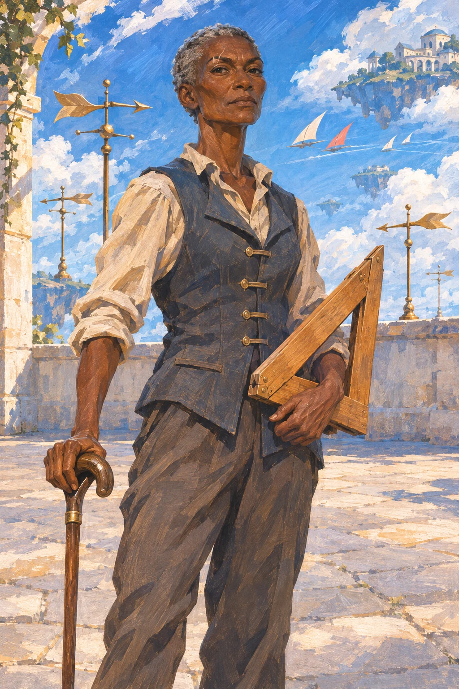
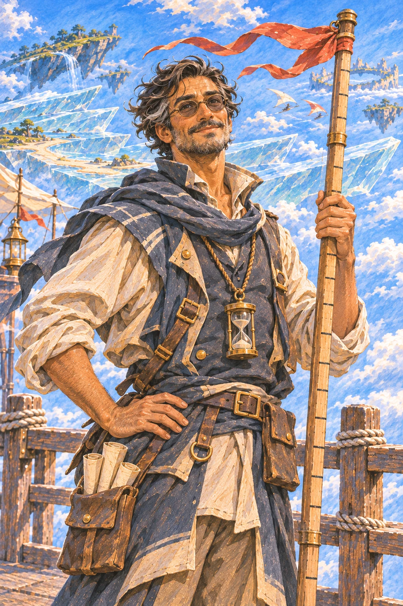

Ответить на сделку судьи, обойти капитанов и заработать их ленты, решить, готовить ли Нери к верхним воротам, и взять отрыв на последнем зачётном участке.
Тобель ИстВеста РонДария ВаррНери Айрен

Гедда Айрен

Наим РошГальт РудойТиса ХорнСельва ПримСарош Ведь
Судейская терраса. Отсюда видна вся Корона целиком: огромное каменное кольцо над облаками, три разрыва в его ободе, а у верхних ворот на шесте бьётся длинная пробная лента — не полощется, а рвётся вбок рывками. На палубе баржи у кнехтов ещё хрустит под сапогами песок из вскрытого сундука, и никто его не выметает. Веста стирает мокрой тряпкой вчерашнюю строку, белый мел крошится ей на рукав. Под доской белеет узкая полоса — спорная строка.
Капитаны собираются у края террасы: Тиса Хорн в третий раз осматривает снасти, Гальт Рудой ворчит, что медь не любит спешки, Нери Айрен считает на рамке минуты до верхних ворот. Внизу, под воротами, маленькая фигура с угольником следит за лентой — Гедда Айрен, смотритель безопасности финала. Завтра здесь будут стоять все восемь планеров, но сначала нужно пройти последний зачётный круг.
Подготовка и роли
Отвод сейчас невозможен: правило 9 — только у колокола, и ленты решают лишь спорную строку. На обвинение Веста: «Судью здесь не снимают. Ленты — у колокола. Правило девять». Сделка — ответ Тобеля на обвинение: −3 героям (−4, если он видел чтение журнала), штраф −5 снят, стёрты только протесты «Стрижа» и колокол; минуты других экипажей остаются; взятку записывает сама Веста. У7 (норма 55): верх −4/+3 (Сл 14), надёжная 0; обгон Дарии −2/+1 (Кречету +2); блок Нери: Нери +3, героям +1; ответный блок Дарии +3 героям, если на У3 её блокировали, — или уступить: Кречету −2, героям 0. Помощь Гальту с медью +1 героям. База соперников У7: Кречет 54, Киноварь 53, Часы 55, Моль 52, Сойка 56, Перья 57, Ёрш 58. Ленты ведите заранее по поступкам; подведённый капитан за «Стриж» не поднимет. Базу поворота («около четверти часа») называет Веста; обе скидки — только экипажу, который не подводил Нери; блок Нери на У7 после взятой страховки — она возвращает её, −2 потеряны; точный диапазон — в момент срыва. Конец: тройка, «Стриж», изменения, порядок старта — лидер первым, остальные с отставанием, не больше 14. Перчатки Тобеля сегодня безупречно белые.
Искра и Альта ведут разговор о сделке Тобеля; решает экипаж голосом пар.
Яра говорит с Геддой и Нери: площадка, страховка и право Нери выбрать верхнюю линию.
Рута решает, отдавать ли запасную страховку; Лис и Брин читают ленту и три дуги.
Искра (протоколист) и Лис обходят капитанов с вещами и просьбами.
Сев и Мея, если за столом: Сев ведёт сигналы на участке, Мея — протокол лент.
Сцена 1 · 80 минут
Доска на террасе
Капитаны восьми экипажей один за другим тянутся к барже: перед последним кругом сюда приходят сверить минуты, и так было на каждом Обходе, сколько его помнят. Медный «Ёрш» швартуется последним, и его усатый капитан, сойдя на палубу, первым делом ворчит на ветер. У края доски Гедда Айрен, поднявшись от ворот, молча чертит большим деревянным угольником угол верхних ворот, штрих за штрихом, и не поднимает головы. В двадцати шагах её дочь перебирает костяшки на рамке, будто считает материнские штрихи. Ветер с Короны треплет край спорной строки. Веста стучит мелом по доске: «Участок шесть. Капитаны — ко мне».
Баржа «Ровный счёт» стоит у кнехтов террасы. Веста выводит строку У6; под доской — спорная строка. Тобель берёт героев под локоть у борта. Если вы уже обвиняли его вслух, он начинает с этого: «Обвинение — это протест, молодые люди. А протест — это доска. Давайте сделаем доску чище.» И тише: «Снимите свои протесты — я сниму штраф и впишу вам судейскую поправку ветра, три минуты. Всем будет чище.» Веста, не оборачиваясь: «Строка под доской моя. Что на ней, то на ней. Поправку тоже запишу.» У доски она говорит всем капитанам: «Кто повернёт к сорвавшемуся у верхних ворот, потеряет около четверти часа. Вторая страховка на нём сокращает.» Дария, если читала расчёт, через всю палубу: «Победитель назван до второго участка. Мной. Без меня. Объясните запятую, судья.» Нери у «Киновари» считает на рамке: «Верх. Я считаю на счётах, а не на страхе.» Гедда, смотритель Короны, молча чертит угольником на доске угол верхних ворот и ничего не объясняет, пока её не спросят. Потом — обход капитанов. Гальт жуёт трубку: «В мои сорок лет колокол был один для всех. Покажете бумагу — поверю.» Тиса: «Три проверки: бумага, печать, свидетель.» Сельва листает тетрадь: «Если я скажу у колокола… меня услышат? Почти уверена, что нет.» Сарош: «Обгоните меня на седьмом — подниму. Не обгоните — с вас ужин Наиму.» Тот, кого вы заперли в арке или оставили в беде, отворачивается: «Ленты поднимайте сами.» Тобель, натягивая свежую перчатку: «Подумайте до вечера. Чистая доска — подарок. Подарки не повторяют.»
Выборы — и что будет дальше
Принять сделку: героям −3 (−4, если Тобель видел, как они читали журнал), штраф +5 снят, протесты «Стрижа» стёрты; Веста записывает поправку в строку. Или отказать.
Сделку принимают: три минуты судейской поправки ветра, четыре — если судья видел героев над журналом; штраф за правку снят, протесты «Стрижа» стёрты. Веста пишет в строку: «поправка ветра — Стриж −3 — по слову судьи». Если строку исполнят, эти минуты вернутся. Отказ встречает холодное: «Как угодно. Завтра колокол в моих руках». Спорная строка остаётся и ждёт четырёх лент.
Спросить Гедду о безопасности верхних ворот (про площадку она скажет только экипажу, который Нери не подводил).
Гедду спрашивают о верхних воротах. Порыв она объясняет любому: «Бьёт справа… после второго рывка». А про площадку под воротами говорит только тем, кто Нери не подводил: «Площадка держит два планера. Туда можно вытянуть того, кто сорвётся». Это две минуты к цене поворота. Подведённым она отвечает угольником, молча чертя угол на доске.
Отдать Нери запасную страховку Руты, если она не осталась на кнехте Порта Гелий (цена поворота −2); экипаж, который подвёл Нери, она не возьмёт.
Запасную страховку такелажника протягивают Нери. Если «Стриж» её не подводил, она берёт, щёлкнув рамкой: «Не надо меня беречь. …Ладно. Это не забота — это счёт». Со второй страховкой при срыве её удержат две точки, и вытащить её выйдет быстрее. Подведённым она не берёт: «У вас — нет». Если страховка осталась на кнехте Порта Гелий, отдавать нечего.
Обход капитанов: Гальту показать листы колокола или помочь увязать медь (+1 героям на У7).
Гальту показывают два стартовых листа — или помогают увязать медь на смене тяжести, теряя минуту на последнем участке. Он долго жуёт незажжённую трубку. «В мои сорок лет колокол был один для всех. Бумагу увидел — поверил». Если помогали с медью, он ворчит теплее: «Медь не торопится. Но и долг не забывает». Его лента у колокола поднимется.
Обход капитанов: Тисе — страница журнала, дата печати и слово Весты; Сельве — уговорить её сказать у колокола; Сарошу — принять пари.
Тисе кладут страницу журнала, дату печати и слово Весты: «Бумага. Печать. Свидетель. Три проверки — подниму». Сельву уговаривают сказать у колокола, что мел школьный: «Меня услышат? Почти уверена, что нет. …Скажу». Сарош принимает пари: «Обгоните меня на седьмом — подниму. Не обгоните — с вас ужин Наиму». Каждая лента — разговор, а не подарок.
Попросить Дарию вскрыть белый пакет, если расчёт ещё не прочитан.
На террасе Дарию просят вскрыть белый пакет — последний раз до колокола. Она ломает печать при экипаже и читает расчёт до запятой. Потом через всю палубу, громко: «Победитель назван до второго участка. Мной. Без меня. Объясните запятую, судья». Тобель не отвечает. Теперь Дария поднимет ленту против своего кредитора и не станет блокировать «Стриж» на седьмом.
Проверка и путь без броска
Нери и страховка: от экипажа, который её подвёл (лист ведущего, вечер 1), не берёт ни с броском, ни без. От остальных — Харизма (Убеждение) Сл 14; без броска — если герои ей помогали (но не если на вечере 5 видела, как Гедда чинила ваш парус). Её слова: «Минус две — на вашей доске, не на моей. …Посчитаю.» Гедда о площадке — только экипажу, который Нери не подводил: на прямой вопрос о безопасности ворот или сама, ночью: «Площадка под верхними воротами держит двоих. Больше не скажу — она не спрашивала.» Обход капитанов без бросков, кроме Сельвы — Убеждение Сл 12 или имя Феи. Сарош поднимет ленту, если «Стриж» пройдёт У7 быстрее «Моли» (52). Подведённый капитан за «Стриж» не поднимет ни по просьбе, ни за вещь; Дария — только если читала расчёт.
Если не получилось
Нери отказывается. Если герои её не подводили и отдадут страховку Гедде, та ночью молча вешает её на «Киноварь»: цена поворота всё равно −2, но Нери на рассвете узнаёт мамин узел — «Вы пошли к ней за моей спиной» — и ленту за героев не поднимет. Если обход капитанов не удался, ленты остаются только за поступки и за вещи у колокола.
Сцена 2 · 90 минут
Внешний круг Короны
Перед последним зачётным кругом экипажи обходят Корону, и вблизи она ещё огромнее: каменный обод поднимается выше любой мачты, а в трёх его разрывах свистит ветер. Вдоль внутренней стены идёт сильный поток, и опытные пилоты держатся от неё подальше. На камне у каждой дуги маршалы оставили меловые отметки: верхняя, средняя, нижняя. Длинная пробная лента у верхних ворот бьётся рывками, раз и второй, и после второго её швыряет вбок. Внизу, на широкой нижней площадке, уже готовят место для награждения. Красный парус «Киновари» ложится рядом со «Стрижом» так близко, что слышно, как стучат костяшки на рамке её капитана.
Перед стартом У7 экипажи обходят Корону. Длинная пробная лента у верхних ворот рвётся вбок рывками; кто спросит Гедду, услышит: «Порыв бьёт справа… после второго рывка. Считай рывки, а не ветер.» Три дуги и меловые отметки на камне читаются без броска. Веста подходит на барже и раздаёт капитанам карточки: «Три линии. Читайте, пока мел сырой.» Участок 7, норма 55 минут. Нери идёт верхней рядом со «Стрижом»: «Верх мой. Три к одному, что не догоните.» Дария держится справа: «Хотите обогнать — обгоняйте. Хотите, чтобы я пропустила, — объясните, зачем мне это.» Сарош свистит с «Моли»: «Ну что, где мой ужин?» Гальт внизу пыхтит под медью: «Медь доходит.» Верхний заход: удача −4, провал +3; надёжная линия 0. Блок Нери: Нери +3, героям +1; она стискивает рамку: «Блок — это ставка. Моя сильнее.» Если на У3 вы блокировали Дарию, она отвечает: «Запомнила. Теперь верну» — героям +3, если не уступите; уступите — она пройдёт чисто, на две минуты быстрее. Пока ведущий исполнитель держит заход, у пар свои эпизоды. На финише Веста пишет мелом восемь строк: «Участок семь закрыт. Читаю доску. Старт финала — по сумме, разрыв не больше четверти часа.» Гедда с края площадки: «Верхние ворота не любят спешки. Они любят счёт.»
Выборы — и что будет дальше
Верхний заход ради −4 или надёжная линия, 0.
Верхний заход идёт под самые ворота, где пробная лента рвётся рывками: удача даёт четыре минуты, срыв стоит трёх. Надёжная линия ничего не даёт и ничего не отнимает. Гедда с края площадки смотрит на «Стриж» без выражения: «Верхние ворота не любят спешки. Они любят счёт». Нери рядом уже идёт верхом: «Верх мой. Три к одному, что не догоните».
Обогнать Дарию в узком месте (−2 / +1, Дарии +2) или держаться за ней.
В узком месте «Стриж» идёт на обгон белого паруса: удача — две минуты выигрыша, а Дарии две минуты потерь; срыв — минута потерь себе. Держаться за ней — спокойно и без выигрыша. Дария не уступает просто так: «Хотите обогнать — обгоняйте. Хотите, чтобы я пропустила, — объясните, зачем мне это». Объяснение у колокола тоже может стать лентой.
Заблокировать Нери: Нери +3, героям +1 — она за «Стриж» ленту не поднимет, а если взяла вашу страховку, вернёт её: −2 к цене поворота потеряны.
Нери закрывают верхнюю линию: ей три минуты потерь, «Стрижу» одна. Она стискивает рамку: «Блок — это ставка. Моя сильнее». Ленту за «Стриж» она теперь не поднимет. Если брала вторую страховку, вернёт её молча, прямо на ходу, и цена поворота у верхних ворот снова вырастет. Это блок против той, кого завтра, может быть, придётся вытаскивать из потока.
При ответном блоке Дарии: держать линию (+3) или уступить (Дарии −2, героям 0).
Дария закрывает «Стрижу» линию: «Запомнила. Теперь верну». Держать линию — три минуты потерь и упрямство. Уступить — она проходит чисто, на две минуты быстрее, а «Стриж» ничего не теряет. Счёт за узкую арку закрыт. Дария, проходя, кивает: «Условие выполнено. Мы в расчёте». Иногда уступить — тоже выигрыш, только записанный не мелом.
Эпизод «ветер»: считать рывки пробной ленты — Мудрость (Внимательность) Сл 12: верхний заход с преимуществом.
Пара ветра считает рывки пробной ленты, как учила Гедда: раз, второй — и порыв бьёт справа. Кто сосчитал, идёт верхним заходом увереннее, зная, когда парус дёрнет. Гедда, если слышит счёт, кивает едва заметно: «Считай рывки, а не ветер». Наблюдатель шепчет: «Два. Сейчас справа. Держи». Лента бьётся ровно так, как сказано.
Эпизод «снасти»: на рывке у ворот рвётся стаксель — Сила (Атлетика) Сл 13; провал — ошибка снастей, +3 (запасной парус отменяет).
На рывке у ворот стаксель рвётся по шву, и «Стриж» клюёт носом. Пара снастей ловит лоскут и стягивает его, пока порыв не ушёл. Удержали — участок чист. Нет — ошибка снастей и три минуты, если нет запасного паруса. Такелажник, затягивая узел зубами: «Ворота проверяют снасти. Завтра проверят всех нас».
Эпизод «соседи»: спросить Нери через ветер, пойдёт ли она завтра верхом — пойдёт; со второй страховкой или без, решает она.
Нери спрашивают через ветер, пойдёт ли она завтра верхом. Ответ короткий и без колебаний: «Пойду. Что бы вы ни говорили». Со второй страховкой или без — решает она сама. Теперь экипаж знает, где завтра будет красный парус, когда у верхних ворот ударит порыв. Гедда, услышав, ничего не говорит, только убирает угольник в ящик.
Проверка и путь без броска
Одна ключевая проверка: Ловкость (Акробатика) Сл 14 ведущего исполнителя, союзник помогает: верхний заход −4 / +3. Обгон Дарии — вторым действием Ловкость (Акробатика) или Сила (Атлетика) Сл 14. Разведка ленты и дуг без броска («Лента верхних ворот», «Три линии к площадке», раздатка «Три линии Кольца Короны»). Если сделка принята, −3 уже учтены. Пари Сароша: «Стриж» на У7 быстрее 52 минут. Базу поворота — «около четверти часа» — Веста уже назвала; точный диапазон — только в момент срыва.
Если не получилось
Провал верхнего захода: +3, но Брин успел сосчитать рывки ленты, и вывод про порыв справа остаётся героям. Провален обгон: +1, Дария остаётся впереди. Если герои заблокировали Нери, её +3 записаны, а Дария замечает это и запоминает. Минуты участка записать на доске и прочитать тройку лидеров, «Стриж» и изменения.
Лента верхних ворот
У верхних ворот Кольца Короны на шесте бьётся длинная пробная лента. Она не полощется ровно, как на причале, а рвётся вбок рывками и после каждого рывка на миг обвисает, будто ветер набирает силу.
Что можно установить
Боковой порыв бьёт справа после второго рывка ленты. Лёгкий планер без второй страховки на резком входе может сорвать в поток вдоль внутренней стены. Заранее увиденное предупреждение и запас страховки уменьшают риск.
Получение
На разведке участка 7 считать рывки ленты и сопоставить их с порывом справа.
Запасной путь
Гедда объясняет порыв любому, кто спросит о верхних воротах.
Три линии к площадке
Три дуги Кольца Короны — верхняя, средняя и нижняя — разведены на разной высоте и уходят к нижней площадке разными путями. На камне у каждой маршалы нанесли меловые отметки; верхняя заметно круче двух других.
Что можно установить
Финал идёт тремя отрезками по двадцать минут. Верхняя дуга короче всех, но на ней порыв; средняя устойчива; нижняя длиннее, а с эскизом Пустой вершины становится на три минуты короче на последнем отрезке.
Получение
Осмотреть все три дуги на разведке участка 7 и сравнить с собственными промерами.
Запасной путь
Раздатка «Три линии Кольца Короны» выдаётся Вестой всем капитанам.
Изменения после решений
Если Герои приняли сделку Тобеля → Героям −3 (или −4), штраф +5 снят, протесты «Стрижа» и о колоколе стёрты; записи о минутах других экипажей остаются. Веста сама пишет в строку: «поправка ветра — Стриж −3 — по слову судьи». Если строку исполнят, эти минуты вернутся.
Если Герои отказали Тобелю → Он холодно отвечает: «Как угодно. Завтра колокол в моих руках». Спорная строка остаётся и исполняется, если у колокола поднимут четыре ленты.
Если Герои блокировали Дарию на У3 и не уступили ей на У7 → Дария отвечает блоком: героям +3. Её лента от этого не зависит: она поднимет её, только если читала расчёт.
Если Нери получила вторую страховку, а Гедда назвала площадку → Цена поворота в финале падает на 2 минуты за каждое, но не ниже 10. Экипаж, который подвёл Нери, не получит ни того, ни другого: его цена остаётся 14. Веста назвала только «около четверти часа».
Выдать в нужный момент
Три линии Кольца Короны — Вечер 7: после разведки, Веста выдаёт всем капитанам, в том числе героям.
Расчёт награды — Вечер 4 после боя или торга, если пакет вернулся и Дария вскрыла его при героях; иначе вечера 5–7 по её согласию, либо Горран швырнул пакет на палубу в вечере 6.
Завершение вечера
Доска после седьмого участка прочитана, порядок старта финала записан мелом, отставания не больше четверти часа. Над Короной темнеет, пробная лента у верхних ворот бьётся в сумерках. Тобель открывает лаковый футляр, проверяет парадные перчатки для завтрашнего колокола и запирает его ключом с цепочки. На кормах капитаны сворачивают белые ленты в кулак: завтра у колокола каждый решит, поднять ли свою. У «Киновари» Нери ещё долго щёлкает костяшками рамки. Пусть хранитель доски назовёт отставание «Стрижа» на старте финала.